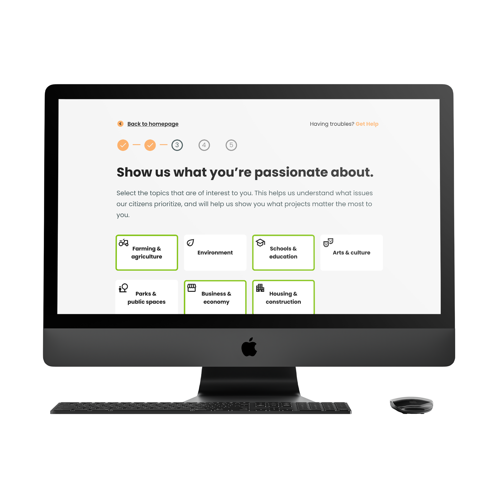
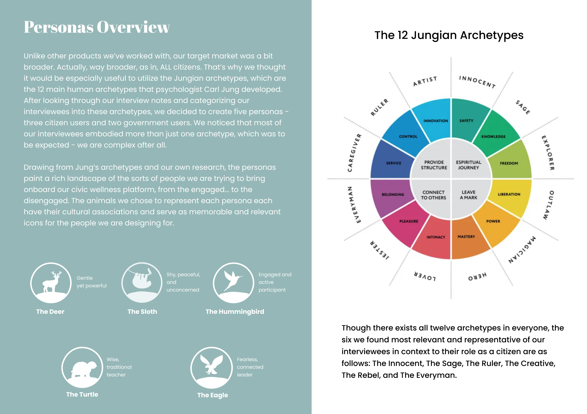
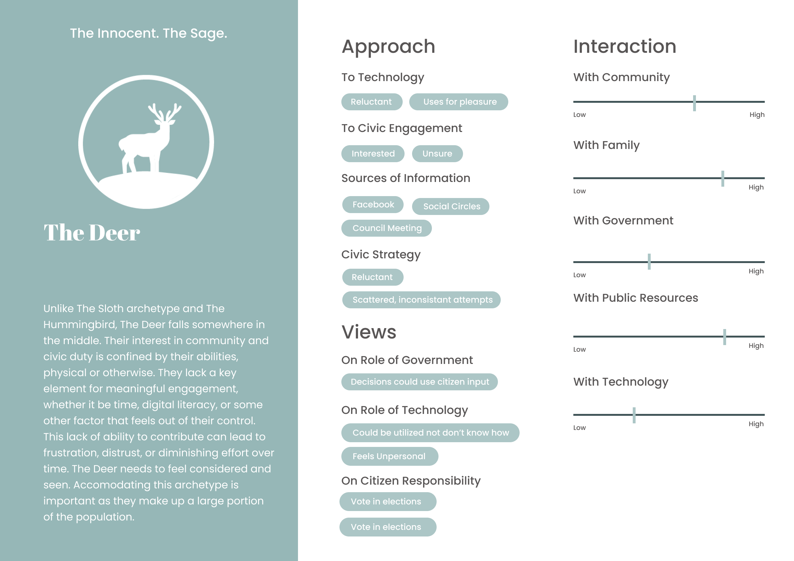
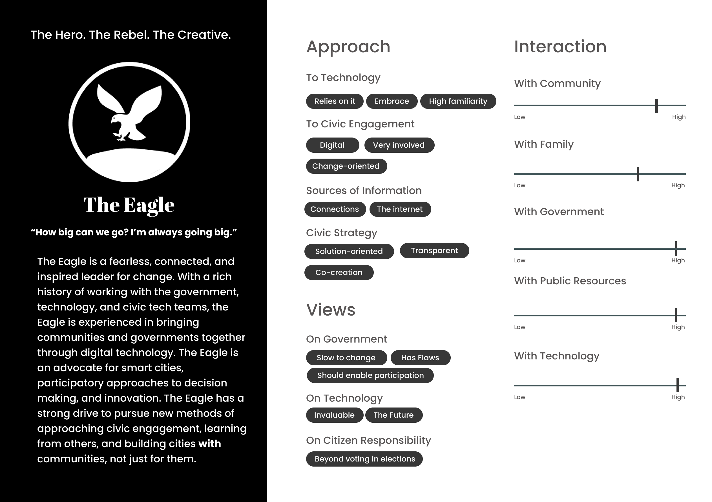
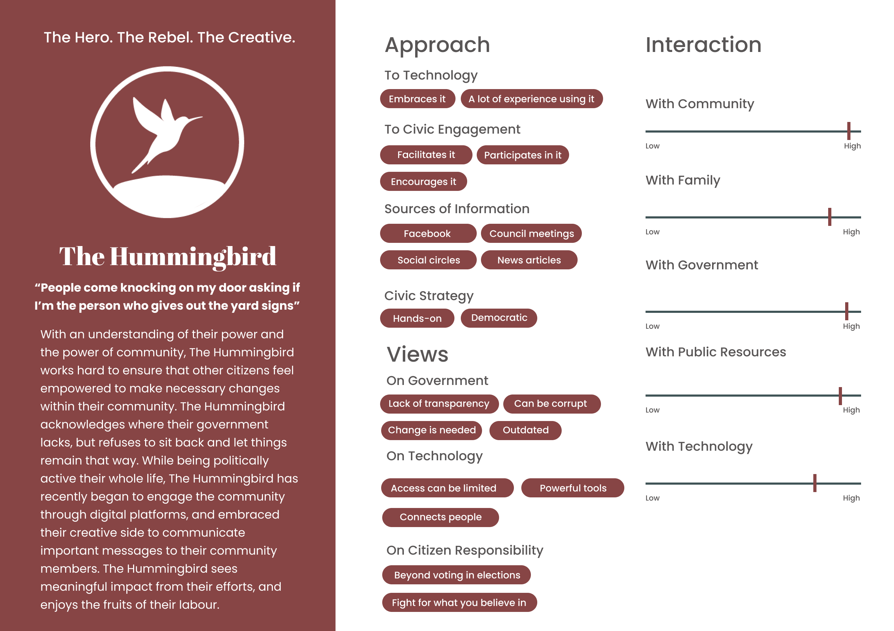
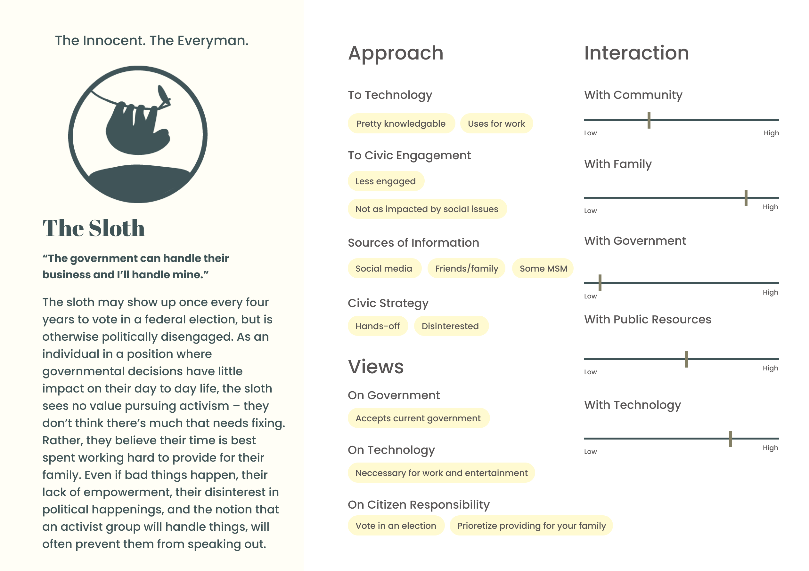
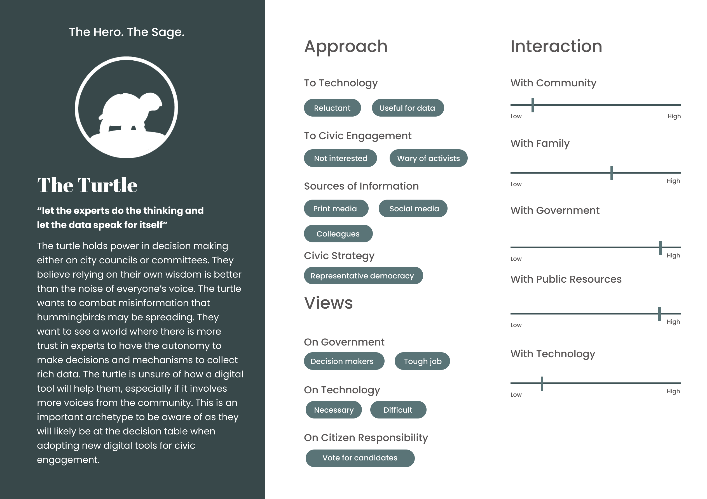
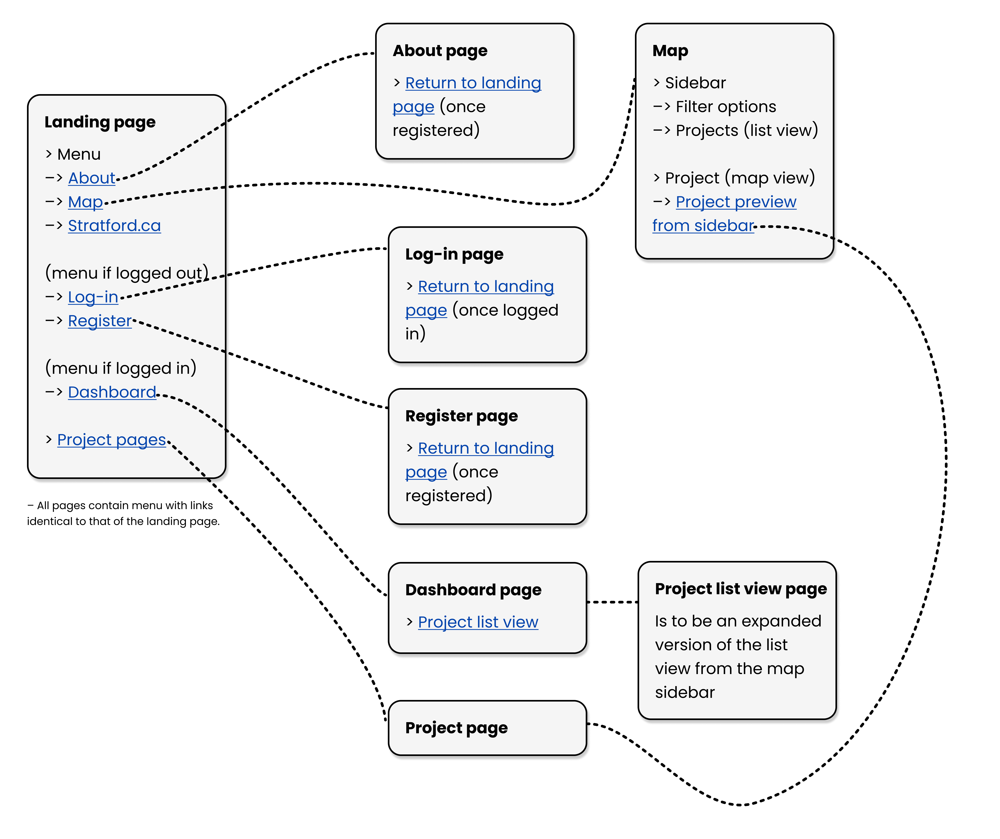

Amplify is a digital civic engagement platform that empowers citizens to get involved in city building by providing a space to collaborate, share ideas, and give feedback within their municipal government. It incorporates the Ethical Smart Cities Framework and utilizes creative methods of data collection and visualization to help foster efficient and meaningful engagement. Alongside a team of four others, I took part in conceptualizing the platform, conducting user research and testing, UX/UI design, and business development.

"How might we enable local governments to better involve communities in the designing of a healthier city?" This How Might We statement that our team came up with was what guided this project from the onset and was inspired by the United Nations' third sustainable development goal (Ensure healthy lives and promote well-being for all at all ages). Our team sought to improve the physical, mental, and economic health of individuals and communities through a more participatory approach to designing cities and determining budget/resource allocation.
A majority of our team was working remotely from Stratford, Ontario, where there were ongoing demonstrations and protests over the local government's lack of transparency in obtaining an MZO to construct a new factory, a project unwanted by the citizens of Stratford. This gave us immediate access to an entire community calling for greater transparency and community involvement in local governmental affairs. Given this situation and the community members and politicians we were best equipped to reach, we defined our consumer base as all Canadian citizens living within the municipalities that we service and eventually further refined this scope to municipalities in Ontario with populations under 100,000 residents.
We spent some time in the preliminary phases of this project gaining an understanding of the space within which we were operating. This involved talking to individuals who worked or had worked on existing digital civic engagement solutions, small business owners who had experience working government contracts (and the grant writing process it entailed), and local politicians.
These conversations exposed our team to a few potential directions we could take our project in that would differentiate us from existing solutions, while simultaneously better addressing some the needs of citizens. There exists a lot of technology for facilitating collaboration between citizens and their governing body, however, often times, the companies that create these solutions work in silos – meaning there is little to no collaboration between these companies when it comes to working towards their common goal of boosting a citizen's capacity to be involved with their local government. Secondly, we noted that many of the existing market solutions had an emphasis on engagement and communication between governments and citizens, but may not adequately paint a wholistic picture of a community's priorities and values.
This lead us to focusing primarily on an onboarding process that would gather information about the interests and priorities of a city's inhabitants upon their signing up for the platform. This data could later be anonymized and visualized for other citizens to view, in an attempt to help paint a more vivid picture of a community's priorities for not only governments, but everyday people. Furthermore, this particular onboarding flow and mechanic could be an integrative product, so that Amplify's onboarding and methods of gauging a community's interest could be used and licensed to other more developed platforms, and allowing for a more collaborative approach amongst companies to tackling e-democracy.
Interviewing community members was the first step to determining what functionalities our minimum viable product was to feature. We talked to community members of varying ages from small towns across Canada to gage expectations, stack rank potential features, and hear the ideas of others. Through the variety of individuals we talked to, we were able to put together five user personas, based on the differing levels of trust, how tech-savvy they were, and their views on the role of citizen and government.






To help us better paint a more holistic picture of the page structure and layout our minimum viable product was to follow, we began to take inventory of the links and possible routes from any given page, and map them out in a preliminary sitemap.

This project, and the onboarding flow in particular, was guided by the Ethical Smart Cities (ESC) framework and toolkit. The ESC-Toolkit is meant to help develop a shared understanding of what an ethical smart city is, and how to achieve it through engaging citizens and understanding their values. Throughout our onboarding questions there are questions from the ESC-Toolkit that we ask with the intention of helping citizens learn more about their community’s values and providing governments with a greater understanding of their community’s needs. You can get view the onboarding flow in the embedded Figma file below.
A piece of our platform that we spent some time working out was a map function, where citizens could view active projects by location, as well as a toggle to switch to a list view of the projects. We designed our map to feature a sidebar preview of whatever given project the citizen clicks on. The sidebar view also features search and filter functionality, and can be toggled between a preview of a project, as well as a list view for all projects on the map. This sidebar replaced the previous modal, as well as the toggle from map view to list view. You can interact with a Figma prototype below.